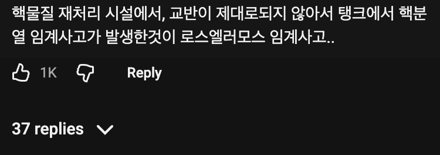
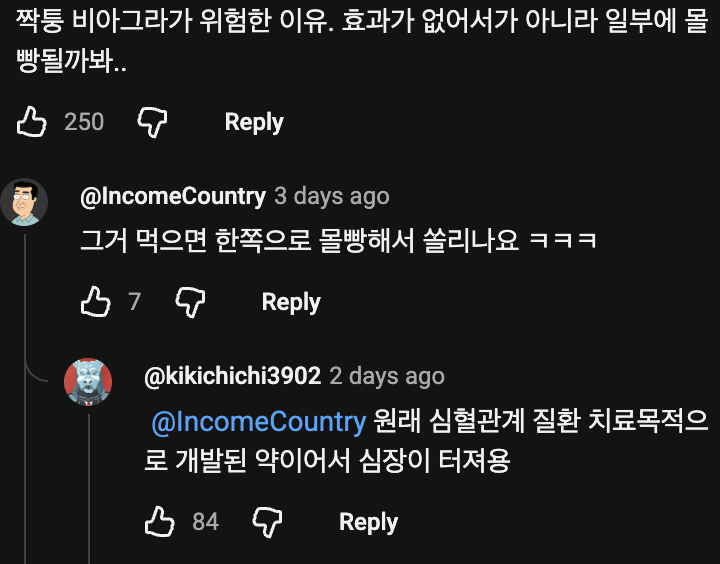

ㅋㅋㅋㅋㅋㅋㅋㅋ
???: 반만 드시면 됩니다
지식이 늘었다
?? : 너의 심장이 터지리라
그래서 발상을 뒤집습니다.
환장 할 노릇이죠
그리고 알약 쪼개먹는거 하지마세용... 알약은 그 제형자체로 약성분이 방출되어야하는 위치와 속도가 다르도록 설계되어있습니다
캡슐약만 그런 거 아님? 그냥 알약은 일부러 쪼개 먹으라고 처방하기도 하는데
알약마다 달라서 약사한테 물어보고 된다는거만 쪼개야 함
ㅇㅇ 맘대로 하지마세용
약성분이 방출되어야하는 위치와 속도가 다르도록 설계
-> 다르니까 되는게 있고 안되는게 있고 일반인은 모름
약사가 쪼개주거나 쪼개먹어도 된다는건 상관없지만 내맘대로 쪼개 먹지 말라는것
오 몰랐다 하나 배우구 간다
외형상으로는 구분안됨
편의점에서 파는 타이레놀ER 같은게
외형은 그냥 일반 알약인데 안에 코팅된 이중형태인거
용량 조절용으로 쪼개 먹어도 되는 알약이 있긴함
약마다 다르고 상황에 따라 의사 약사도 쪼개먹으라고 복약지도함
맞음 의사 처방대로 하면 되는데 맘대로 다 쪼개먹지 말라는것
결국 일반인들의 빡대갈짓을 이기지 못하고 퇴출되는 서방정들ㅋㅋㅋ
일반 제형, 구강붕해정 등은 큰 문제 없음.
장용정, 지속정, OROS등 기타 특수제형은 안 됨. 궁금하면 물어보고 드셈.
중국산 가짜 비아그라 함량이 너무 높아서 쪼개서 먹으면 된다는 뉴스가...

그래서 교반이 끝나면 교반기의 상중하 왼중오 9~10군데에서 샘플을 채취해서 정량이 있는지 체크하는 방법도 있음.
의약품용 냉장고도 냉장고 위쪽 선반이랑 아래선반이랑 온도 다를까봐 여러군데에 온도계 설치하는 경우도 있음.
GMP 으아악
미국에 항의하도록
하긴 알약은 쪼개먹기도하니까 골고루 섞여있어야겠지
?? : "그곳이 터져 죽습니다"